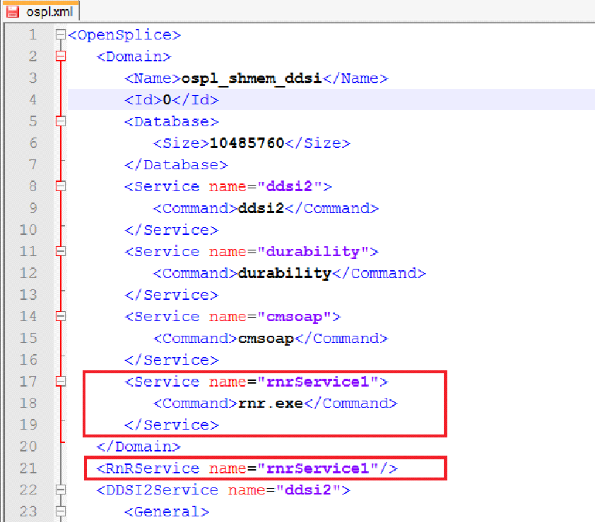

2. Introduction¶
The Vortex OpenSplice Record and Replay Manager, or RnR Manager, is a tool to control Vortex OpenSplice Record and Replay Services (RnR Services) and to inspect and change recorded data.
2.1. Overview¶
This section provides a brief introduction to the OpenSplice DDS RnR Service and the RnR Manager tool.

- Version 6.4 of RnR Manager is compatible with Vortex OpenSplice version 6.4. It is not compatible with earlier versions of OpenSplice.
2.1.1. Vortex OpenSplice Record and Replay Service¶
RnR Services are the Vortex OpenSplice software modules responsible for implementing record and replay.
2.1.1.1. Vortex OpenSplice RnR Service Features¶
Features provided by the RnR Service include the ability to:
- Control and monitor the service using regular DDS topics.
- Use expressions with wildcards to select partitions and topics of interest, for record and/or replay.
- Store data in XML records for easy post-analysis and data-mining.
- Store data in CDR records for efficient recording and replaying of high-volume data
- Create scenarios, grouping multiple commands into a logical set.
- Use replay filters to replay only the data recorded in a specific time-range.
- Query and edit storage data.
2.1.1.2. Non-Intrusiveness of Vortex OpenSplice RnR¶
Vortex OpenSplice Record and Replay is a pluggable service of the Vortex OpenSplice Middleware and is capable of recording and/or replaying DDS datasets (i.e. topic samples) in a DDS system. As a ‘DDS service’, Record and Replay benefits from the inherent ‘decoupling in time and space’ that the DDS architecture offers, with respect to automatic discovery of the service’s dynamic interest in subscribing or publishing data as well as the transparent routing of information to and from the service.
Relevant characteristics of this service with respect to ‘intrusiveness’ for an existing system are:
- The RnR service can be optionally configured on any DDS node in
the system.
- When run as part of an existing federation of applications, it utilizes the federation’s shared memory segment to obtain the data. (So locally-published data is not required to travel over the network to be recorded by the service and vice versa for replaying towards co-located subscribers.)
- When run on a dedicated RnR node, to be recorded data is transparently forwarded to that RnR node typically using multicast network features (so as not to induce extra network traffic).
- RnR services are controlled in ‘the DDS way’, i.e. a data-centric
way where command and status topics enable DDS based ‘remote
control’ of the service from anywhere in the system.
- A dedicated record and replay partition is utilized by RnR to bound the control/status flows.
- In the case of a dedicated RnR node, this partition can be configured to be a so-called ‘local partition’, thus bounding all control/status traffic to the RnR node (see Section 2.5.2.6 in the OpenSplice Deployment Guide).
- Replaying (subsets) of recorded data ‘by definition’ has an
impact on an existing system:
- As it can induce unanticipated traffic flows towards subscribing applications.
- As it typically triggers application processing of such replayed data.
- Which can be considered intentional and inherent to the purpose of replaying recorded data.
Summarizing, it can be stated that when dedicating a specific computing node for Recording and Replaying and confining the control and status traffic to control the service to stay inside that node, recording the data in a multicast-enabled network is non-intrusive.

- Note: The few shared topic-definitions (definitions ONLY, not actual samples of these topics when these are ‘confined’ to the RnR node) that would be visible system-wide when inspecting the built-in topics of the system (for instance with a tool like the OpenSplice Tuner) are considered not instrusive as they only imply a small amount of static data space occupied by the related built-in topic samples.)
2.1.1.3. Vortex OpenSplice Deployment Documentation¶
Please refer to the Vortex OpenSplice Deployment Guide (OpenSplice_Deployment.pdf) for more detailed information on how to configure Vortex OpenSplice.
The OpenSplice configuration editor (osplconf) provides facilities to create, modify and save configuration files. This tool is described in Section 3.2 in the Vortex OpenSplice Deployment Guide.
2.1.1.4. Vortex OpenSplice RnR Service Configuration Example - ospl.xml¶
In order to use the RnR service, a new service needs to be defined in the xml configuration files. In the example below, the RnR-related entries are highlighted in red.
RnR Service Configuration in ospl.xml
{kind=link}
The service name in the example is rnrService1. A system can have many rnr services. The service name can be any string value.
2.1.2. RnR Manager Product Overview¶
The Vortex OpenSplice Record and Replay Manager, or RnR Manager, is a tool to control Vortex OpenSplice Record and Replay Services (RnR Services) and to inspect and change recorded data.
RnR Manager uses the internal Control and Monitoring API for access to the Vortex OpenSplice Middleware. Connections to local nodes via JNI and remote nodes (via SOAP) are supported. The manager tool does not need to have OpenSplice DDS installed locally. A connection can be made remotely to a node that is running Vortex OpenSplice.
2.1.2.1. RnR Manager Features¶
Features provided by the RnR Manager product include:
- Control and Monitor all Recorder and Player instances in the system.
- Connect to local and remote nodes.
- Monitor RnR Service status (scenarios, storages and services).
- Record and Replay scenarios.
- Import and export recorded data.
- Query and edit recorded data.
2.2. Key Concepts¶
2.2.1. Services¶
The Vortex OpenSplice middleware RnRService is responsible for implementing record and replay functionality.
A system may be configured to have multiple RnR Service instances.
An RnR Service is identified by a name. This name (also known as rnrId) is used to address the commands to a specific RnR Service. It is defined by the ‘name’ attribute of the service tag in the Vortex OpenSplice configuration. For example:
<OpenSplice>
<Domain>
<Name>domain_name</Name>
<Id>0</Id>
<Database>
<Size>10485670</Size>
</Database>
<Service name="durability">
<Command>durability</Command>
</Service>
<Service name="cmsoap">
<Command>cmsoap</Command>
</Service>
<Service name="rnr_service_name">
<Command>rnr</Command>
</Service>
</Domain>
<RnRService name = "rnr_service_name”/>
Where "rnr_service_name" will be used to identify this service.
The middleware uses this identifier to resolve the configuration options that apply to the service. A Record and Replay service only accepts commands with an rnrId that matches its Service name. In addition, an asterisk ‘*’ can be used as rnrId for commands targeted at all available RnR Services in a domain.
2.2.2. Scenarios¶
The actions of a Record and Replay service are organized in ‘scenarios’. Scenarios are used to logically discriminate between different recording and replay command sequences (or sessions). A scenario is an instance of the scenario topic, a group of commands sharing the same scenarioName.
During initialization the RnR Service starts an initial scenario, called the BuiltinScenario. This is a special scenario that is always running while the service is operational. RnR Manager uses the BuiltinScenario to configure and control the RnR Service and create new scenario topic readers for each scenario ‘rr_scenarioReader_<scenarioName>’.
A Scenario may be in one of the following states:
- SCENARIO_RUNNING
- Scenario is active and able to receive and process commands
- SCENARIO_STOPPED
- Scenario is stopped and unable to receive commands
- SCENARIO_SUSPENDED
- Scenario is suspended and will resume processing commands when scenario is (re)started or continued
 Note that the BuiltinScenario can not be stopped.
Note that the BuiltinScenario can not be stopped.
2.2.2.1. Scenario Commands¶
RnR commands are sent to the Scenario’s Command topic. Supported scenario commands are: Add Record, Add Replay, Remove Record, Remove Replay, Set Replay Speed, Truncate, Start, Stop and Suspend.
- Add Record
- Specify interest to record data to a storage.
- Add Replay
- Specify interest to replay data from a storage.
- Remove Record
- Remove record interest from a storage.
- Remove Replay
- Remove replay interest from a storage.
- Set Replay Speed
- Change the replay speed of a storage.
- Truncate
- Remove data from a storage.
- Start
- Start a scenario, or continue a suspended scenario.
- Stop
- Stop a running scenario.
- Suspend
- Suspend processing of new commands in a running scenario.
- Config
- Add a storage to the service or modify properties of an existing storage.
- It is important to understand that a scenario, once stopped, cannot be started again. However, it is possible to start a new scenario with the same name as the stopped scenario. If any commands of the original scenario were published as transient data they will be delivered to and processed by the new scenario, giving the impression that the scenario has been re-started.
2.2.2.2. Different versions of the scenario topic¶
Starting with Vortex OpenSplice RnR Manager V6.6.0, the tool interacts with two versions of the RnR service provided scenario command topic: rr_scenario and rr_scenario_v2. The new version of the topic contains support for Transformations (partition, QoS) of data during replay.
The tool will only publish comands to the v2 command topic. If there exist scenarios from the previous version of the topic, e.g. from a persistent DDS store, then the tool will be able to read in the scenario commands for display in the Scenario Editor but if the scenario is stopped and started again from the editor, the scenario commands will be republished in the the v2 command topic, and the old topic scenario will be disposed.
Vortex OpenSplice RnR Manager expects the rr_scenario_v2 topic to be registered by the time it needs to publish commands, e.g. when starting/stopping a scenario or creating a storage. If the v2 topic is not registered, command publication will not take place. The tool does not attempt to publish commands on the old rr_scenario topic.
2.2.3. Storages¶
The RnR Service operates in conjunction with storages, which can be configured statically in a configuration file or dynamically through interaction with the service.
RnR Manager determines the available storages by subscribing to the storage status topic. It can be used to add new storages to a service.
Storages may have the following states:
- STORAGE_READY
- Defined, but not opened yet.
- STORAGE_OPEN
- Storage successfully opened and can be written to.
- STORAGE_ERROR
- An unrecoverable error has occurred in the storage.
- STORAGE_OUTOFRESOURCES
- The storage is out of resources.
- STORAGE_CLOSED
- The storage has been closed and can no longer be written to.
2.2.4. Samples¶
The RnR Service records and replays DDS data, or Samples. A recorded Sample is stored in XML form in the file associated with the Storage. In addition to recording the topic data (for future replay), the RnR Service records additional Sample Information such as the Partition, Topic name, and recording time (timestamp).
When a Storage is imported into RnR Manager, the Sample data and recording information can be viewed using the Storage Editor.
2.2.5. Time Ranges¶
Time Ranges can be used to limit the selection of data in a replay session. Users can select sample data based on the recorded timestamps. A range is defined with a start and an end timestamp.

Table Of Contents
- 2. Introduction